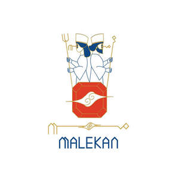
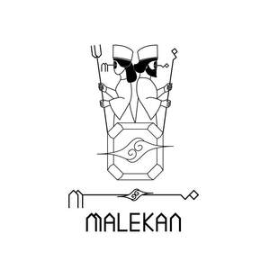

Trade Mark Journal No.2026/010 6 March 2026
UK00004341041 15 February 2026 (14,35,40,41)
Mark 1

Mark 2

- Class 14
- Jewellery; Necklaces [jewellery]; Brooches [jewellery]; Jewellery brooches; Jewellery, including imitation jewellery and plastic jewellery; Pendants [jewellery]; Bracelets [jewellery]; Brooches [jewellery, jewelry (Am.)]; Ornaments [jewellery]; Amulets being jewellery; Amulets [jewellery]; Pearls [jewellery]; Trinkets [jewellery]; Necklaces [jewellery, jewelry (Am.)]; Jewelry; Fashion jewellery; Gold jewellery; Lockets [jewellery]; Jade [jewellery]; Brooches [jewelry]; Jewelry brooches; Brooches being jewelry; Charms [jewellery]; Charms for jewellery; Jewellery charms; Clasps for jewellery; Enamelled jewellery; Ornaments [jewellery, jewelry (Am.)]; Pearls [jewellery, jewelry (Am.)]; Costume jewellery; Items of jewellery; Jewellery items; Decorative brooches [jewellery]; Trinkets [jewellery, jewelry (Am.)]; Rings being jewellery; Rings [jewellery]; Amulets [jewellery, jewelry (Am.)]; Bracelets [jewellery, jewelry (Am.)]; Pewter jewellery; Jewellery stones; Wristlets [jewellery]; Cloisonné jewellery [jewelry (Am.)]; Cloisonné jewellery; Charms [jewellery, jewelry (Am.)]; Cloisonne jewellery; Lockets [jewellery, jewelry (Am.)]; Chains [jewellery, jewelry (Am.)]; Jewellery products; Rings [jewellery, jewelry (Am.)]; Ivory [jewellery, jewelry (Am.)]; Shoe jewellery; Precious jewellery; Crucifixes as jewellery; Necklaces [jewelry]; Agate as jewellery; Pins [jewellery, jewelry (Am.)]; Chains [jewellery]; Ivory jewellery; Jewellery caskets; Paste jewellery [costume jewelry (Am.)]; Paste jewellery [costume jewelry [Am.]]; Gold plated brooches [jewellery]; Imitation jewellery; Amberoid pendants being jewellery; Gold thread [jewellery, jewelry (Am.)]; Body jewellery; Beads for making jewellery; Jewellery for pets; Personal jewellery; Silver thread [jewellery, jewelry (Am.)]; Jewellery incorporating diamonds; Jewelry (Paste -) [costume jewelry]; Paste jewelry [costume jewelry]; Jewellery in non-precious metals; Plastic costume jewellery; Imitation jewellery ornaments; Clips of silver [jewellery]; Hat jewellery; Facial jewellery; Jewellery findings; Crosses [jewellery]; Sterling silver jewellery; Jewellery in the form of beads; Bracelets [jewelry]; Paste jewellery; Jewellery (Paste -); Jewellery incorporating pearls; Amulets [jewelry]; Pearls [jewelry]; Jewellery articles; Articles of jewellery; Jewellery made from gold; Jewellery made from silver; Diamond jewelry; Wire of precious metal [jewellery, jewelry (Am.)]; Jewellery containing gold; Jewellery chain of precious metal for anklets; Dress ornaments in the nature of jewellery; Lockets [jewelry]; Jewellery chain of precious metal for bracelets; Jewellery in precious metals; Jewellery of precious metals; Clasps for jewelry; Jewelry stickpins; Trinkets [jewelry]; Threads of precious metal [jewellery, jewelry (Am.)]; Artificial jewellery; Jewellery for personal wear; Decorative pins [jewellery]; Jewellery fashioned from non-precious metals; Charms [jewelry]; Jewelry charms; Charms for jewelry; Jewellery cases; Jewellery rope chain for necklaces; Body costume jewellery; Jewellery fashioned of semi-precious stones.
- Class 35
- Business management; Business management and consulting; Business management consulting; Business management consultancy; Business management and consultancy; Advertising; Advertising and marketing; Publicity and advertising; Advertising and marketing services; Advertising, promotional and marketing services; Advertising, marketing and promotional services; Marketing, advertising, and promotional services; Banner advertising; Television advertising; Advertising services of a radio and television advertising agency; Advertising and marketing consultancy; Advertising, marketing and promotion services; Marketing, advertising and promotion services; Advertising and promotional services; Promotional advertising services; Online advertising; Newspaper advertising; Advertising agencies; Hire of advertising billboards; Copywriting for advertising and promotional purposes; Recruitment advertising; Promotion [advertising] of business; Radio advertising; Promotion, advertising and marketing of on-line websites; Leasing of advertising hoardings; Mail-order advertising; On-line advertising and marketing services; Magazine advertising; Advertising and promotion services; Outdoor advertising; Radio advertising and commercials; On-line advertising; Hire of advertising hoardings; Digital advertising services; Design of advertising brochures; Classified advertising; Organization of fairs and exhibitions for commercial and advertising purposes; Organisation of exhibitions for business or commerce; Organization of exhibitions and trade fairs for commercial or advertising purposes; Organisation of exhibitions and trade fairs for business and promotional purposes; Organization of events, exhibitions, fairs and shows for commercial, promotional and advertising purposes; Organization of trade fairs; Organisation of exhibitions and events for commercial or advertising purposes; Organisation of exhibitions and trade fairs for commercial and advertising purposes; Organisation of exhibitions and trade fairs for commercial or advertising purposes; Business organization consultancy; Organizing exhibitions for commercial or advertising purposes; Arranging and conducting of fairs and exhibitions for advertising purposes; Providing employment information; Providing assistance in the management of business activities.
- Class 40
- Treatment of waste materials; Treatment of materials using chemicals; Vulcanisation (material treatment); Vulcanization [material treatment]; Treatment [reclamation] of material from hazardous products; Vulcanizing [material treatment]; Treatment of metals; Provision of information relating to the treatment of materials; Metal treatment services; Material treatment (Information relating to -); Welding; Soldering; Brazing; Metal brazing; Welding services.
- Class 41
- Organization of seminars; Organisation of conferences, exhibitions and competitions; Organization of exhibitions for cultural or educational purposes; Providing of training; Publishing; Newspaper publishing; Book publishing; Magazine publishing; Multimedia publishing; Electronic publishing; Publishing of documents; Entertainment.
Mehran Ranjbar
Hosseinali Malekan